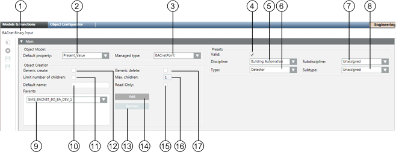
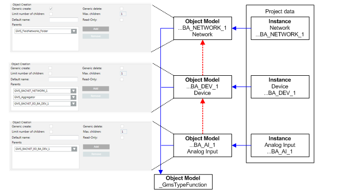
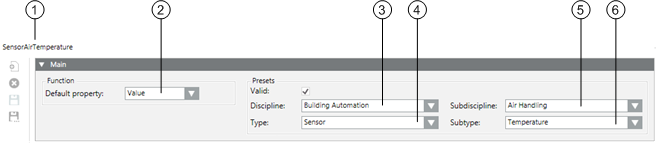

Main Expander
In the Models & Functions tab, the Main expander provides some principal settings for the Object Model or Function that is being configured.
Main Expander for Object Model
In the Main expander for an Object Model, you can:
- Define the default property
- Assign presets for electrical and mechanical installation
- Define the response when creating new objects

| Name | Description |
1 | Object Name | The designation of the selected object model. It is derived from the platform type and must be unique within the system. Object Model names are not localized. |
2 | Default Property | Defines the default property when none is assigned. This property displays in the Textual Viewer. The defined default property is inherited from the corresponding applications or the Desigo CC Viewer. |
3 | Managed Type | Defines which application is displayed when an object is selected in System Browser. For example, objects of the type scheduler can directly open the Scheduler application from System Browser. Configure only if a new application is added. |
4 | Displays, based on the color code, the source used for inheriting the information. | |
5 | Discipline | General application category for this object model (for example, Building Automation, Security, Energy Management). |
6 | Type | General object type represented by this object model (for example, sensor or camera). |
7 | Subdiscipline | More specific application category for the object model (for example, 'evacuation' for the Security discipline). |
8 | Subtype | More specific object type represented by this object model (for example, 'temperature' for the Sensor type). |
9 | Parents | List of parent elements for the Data Point Type. Configures the object type that can be created by the application. If the Generic Create check box is selected, parent configuration specifies the type of children that can be created in the Object Configurator. |
10 | Default name | The default name is assumed when creating a child. |
11 | Limit of children | Select this check box to enable entering a limit in the Max. children field, for the number of child objects that can be created. |
12 | Generic create | Permits creation of an object in the Object Configurator. |
13 | Remove | Delete the selected element from the parent list. |
14 | Add | Add a parent element. |
15 | Read-only | The default name for a child cannot be changed. |
16 | Max. children | Defines the maximum number of child objects. For example, setting a child element (such as a printer) to a maximum of 2 allows you to define a server printer and an SNMP printer. |
17 | Generic delete | Permits deletion of an object in the Object Configurator. |
Object Creation
- Parent
One Desigo CC child object may possess multiple parents and may be recursive. Recursivity of an Object Model means that the same Object Model type may be added at one hierarchy level lower.
Example of Object Models | ||
Network | Device | Analog Input |
Field network | Network | Device |
| Aggregator | Aggregator |
| Device |
|

Main Expander for a Function
In the Main expander for a function, you can:
- Define the default property.
- Assign presets for the electrical and mechanical installation.

| Name | Description |
1 | Object Name | Function designation. Depending on the setting either the name or designation or both are displayed. |
2 | Default Property | Define the default property. The defined default property is assumed by the corresponding applications or Desigo CC Viewer if no default property is available for the corresponding subsystem |
3 | Discipline | Category of the discipline (for example, Life Safety). |
4 | Type | Category of the corresponding type (for example, Zone). |
5 | Subdiscipline | Subdescription of object (for example, Detection for Life Safety discipline). |
6 | Subtype | Subdescription of object (for example, Zone 1 for Zone type). |
Presets
- Discipline, Subdiscipline, Type, Subtype
The selected information helps specify the purpose and application for which an Object Model / Function is used in the building.
Presets | |||
Discipline | Subdiscipline | Type | Subtype |
Building Automation | Air Handling | Sensor | Frost |
Building Infrastructure | Elevators | Detector | Door |
Energy Management | Power Distribution | Switch | Binary |
Security | Door Control | Detector | Door |

Entries for Discipline, Subdiscipline, Type and Subtype have a direct influence on search criteria in Desigo CC.